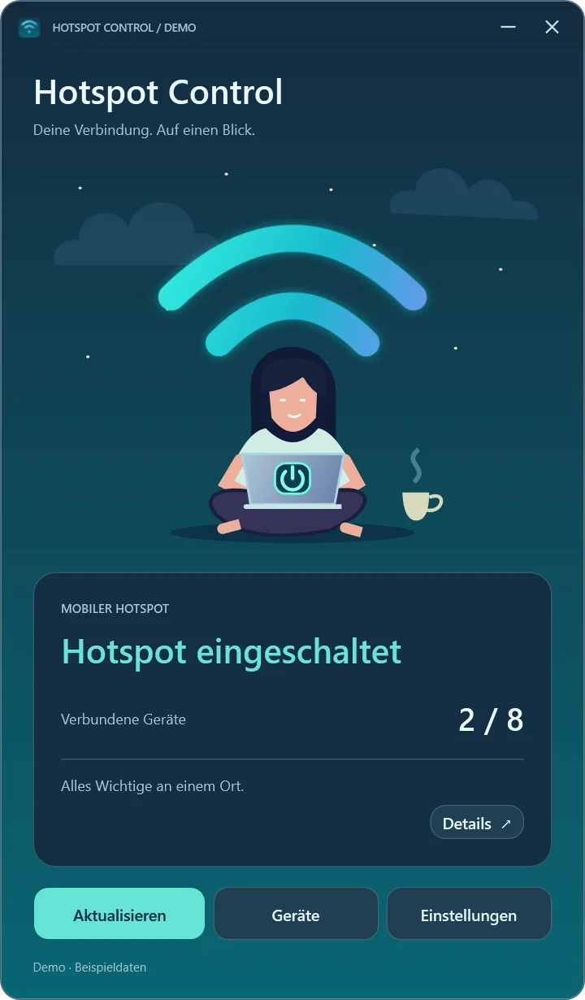
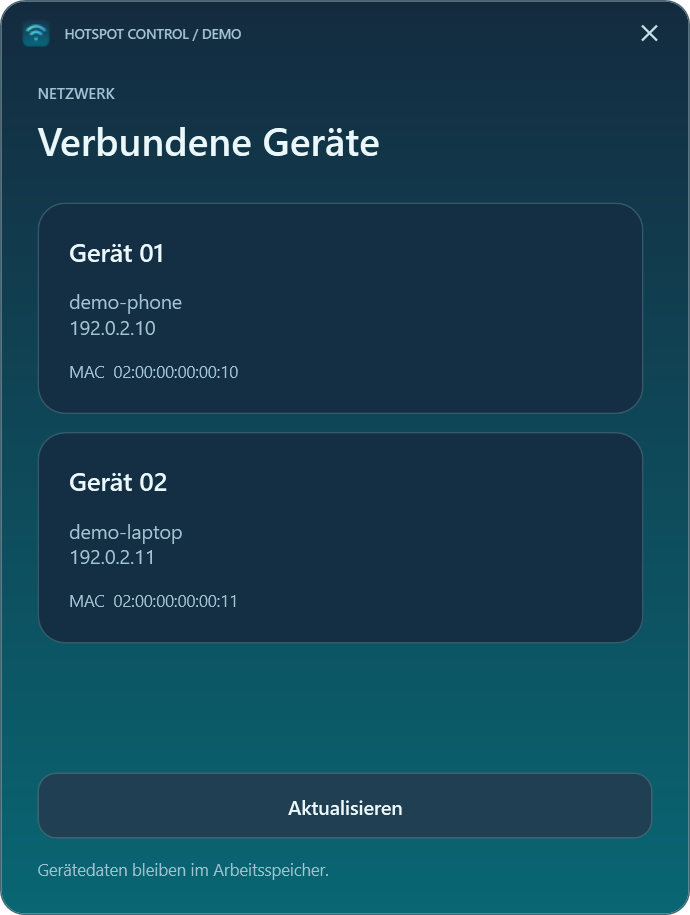
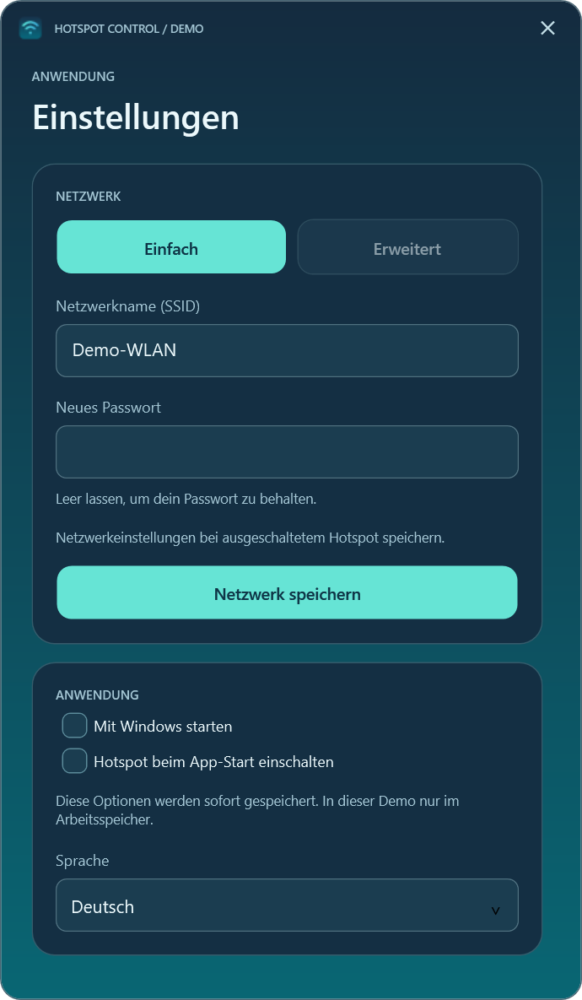
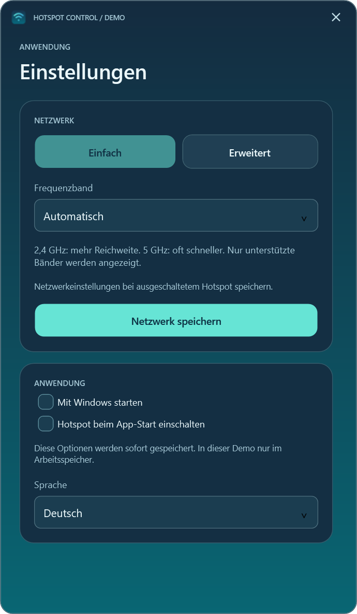
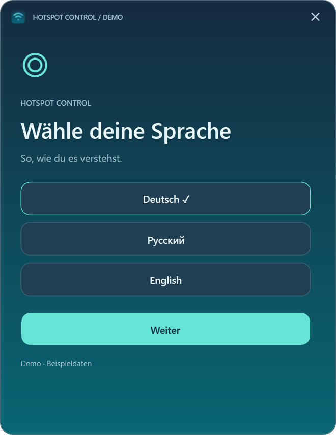
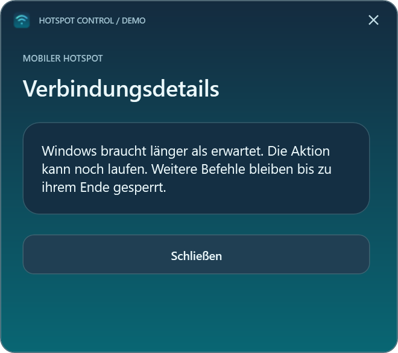

Anleitung
Hotspot Control
Steuern Sie den mobilen Windows-Hotspot, sehen Sie verbundene Geräte und verwalten Sie Netzwerk- und Autostarteinstellungen.
Windows 11 24H2+ · x64 · Release 0.3.0
Voraussetzungen und Grenzen: Kompatibler WLAN-Adapter; Windows- oder Organisationsrichtlinien können Funktionen einschränken. .NET ist enthalten.
Erste Schritte: SHA-256 prüfen, ZIP vollständig entpacken und HotspotControl.App.exe öffnen. Keine separate .NET-Installation nötig.
App-Dateien
Prüfsummen: HotspotControl-0.3.0-win-x64.zip.sha256
Hotspot Control ist eine kompakte Windows-11-Anwendung für den eingebauten mobilen Hotspot. Sie zeigt Status und verbundene Geräte, schaltet die Freigabe und bietet Netzwerk- und Autostarteinstellungen. Oberfläche, Fehler und Tray unterstützen Deutsch, Russisch und Englisch. Beim ersten Start wird die Sprache gewählt; spätere Änderungen in den Einstellungen gelten nach einem Neustart.

Bildschirmansichten
Diese WPF-Vorschaubilder verwenden erfundene Daten. Gerätenamen zeigt die App so an, wie Windows sie liefert; Beispielnamen, Adressen und die Kennzeichnung DEMO sind keine Erklärungstexte. Die Sprachnamen im Sprachauswahldialog benennen die verfügbaren Optionen.
| Hauptfenster | Verbundene Geräte |
|---|---|
 |
 |


| Einfache Einstellungen | Erweiterte Einstellungen |
|---|---|
 |
 |


| Sprachauswahl | Zeitüberschreitung |
|---|---|
 |
 |


Herunterladen und starten
HotspotControl-0.3.0-win-x64.zip von Releases laden, den SHA-256-Wert mit der .sha256-Datei vergleichen und das gesamte ZIP entpacken. Im entpackten Ordner HotspotControl.App.exe starten. Weder Installation noch Administratorrechte oder eine separate .NET-Installation sind nötig. Zielsystem: Windows 11 ab 24H2, x64, mit geeignetem WLAN-Adapter. Windows- oder Organisationsrichtlinien können Funktionen einschränken. Bisher wurde nur auf dem Computer des Autors praktisch getestet.
Der Power-Knopf auf dem illustrierten Laptop schaltet den Hotspot ein oder aus; Ausschalten trennt verbundene Geräte. Geräte zeigt die von Windows gelieferten Angaben. Einstellungen bietet Netzwerkname, neues Passwort, unterstütztes Frequenzband, Sprache und benutzerbezogenen Autostart. Ein leeres Passwortfeld behält das bisherige Passwort. Netzwerkänderungen erfordern einen ausgeschalteten Hotspot. Minimieren blendet das Fenster in den Infobereich aus; ein Klick auf das Symbol stellt es wieder her. Schließen beendet die App, ohne den Windows-Hotspot zu ändern. Grüne Wellen bedeuten eingeschaltet; graue ausgeschaltet oder unbekannt.
Der automatische Hotspotstart ist optional. Mit HotspotControl.App.exe --no-auto-start lässt sich die App ohne diese Automatik öffnen. Ein Windows-Auftrag kann nach einem Timeout noch fertig werden; vor weiteren Änderungen den Status prüfen. Eine Geschwindigkeitsbegrenzung pro Gerät gibt es nicht.
Datenschutz und Entwicklung
Keine Cloud, Telemetrie oder lokalen Protokolle mit Netzwerknamen und Geräteadressen. Sprache und automatische Aktivierung stehen in %LOCALAPPDATA%\HotspotControl\preferences.json; die Windows-Start-Verknüpfung liegt im Autostartordner des Benutzers. Die App speichert keine Passwörter. In Fehlerberichten und Screenshots persönliche Daten entfernen. Das Bild oben nutzt erfundene Daten.
Zum Bauen ist das .NET-10-SDK auf Windows nötig: ./Run-Checks.ps1 und ./Publish.ps1. Mit -DotnetPath kann ein anderes SDK gewählt werden. Das Skript erstellt ZIP und SHA-256 lokal unter artifacts/; es lädt nichts hoch.
Der Quelltext hat keine Open-Source-Lizenz. Persönliche Nutzung der unveränderten Release-Binärdatei ist erlaubt. Architektur · Versionshinweise · Vorschau · Änderungen · Nutzungsrechte · Drittanbieterhinweise.